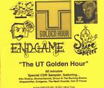

| Artist: | Various Artists |
| Title: | The UT Golden Hour |
| Label: | Auricle AMSCDR 003 |
| Length(s): | 60 minutes |
| Year(s) of release: | 2001 |
| Month of review: | [10/2001] |
| 1) | ZBB - Imaginë | 5.28 |
| 2) | Alto Stratus - Time Reversal | 6.43 |
| 3) | Biomechanoid - Island Of The Dead | 5.03 |
| 4) | Shapeshifter - Alien | 6.53 |
| 5) | Shapeshifter - Celestial Mirror | 8.04 |
| 6) | Endgame - Path 6: To The Edge Of The World | 7.38 |
| 7) | Endgame - The Dream Temple | 9.05 |
| 8) | The Newt Hounds - Behold The Poignant Device | 3.24 |
| 9) | Out Of Focus - Y | 7.51 |
Alto Stratus has a similar approach, but definitely more spacey. A large part of the music is taken up by estranging vocal sounds that have been warped (reversed) beyond recognition. Below it all, the drone of a spaceship (at least it could be. Whoe knows?). Again no rock on this track, but sounds and sounds. However, like the previous track the music does manage to convey something. Interesting and somewhat scary stuff. I wonder what I would think of an album filled entirely with this stuff.
Biomechanoid is next up with Island Of The Dead (I do not think this is a Rachmaninow cover, but who knows). Sparse electronics fill this one, but the recording quality is not that good (or should it include quite a bit of white noise?) Again mostly effects, but also again, quite nice to listen to. Lots of reverberation in the sounds, to the point of harrowing.
Little girls singing (vocoded) on Alien by Shapeshifter. Finally we also hear some guitar on a track here. The spoken voice is very accented. Seems to be a French band this. The female vocals, the psychedelic guitar and Indian percussion give the song a strong Amon Duul feel. I am not too happy with the thrilly vocals and the music itself is a bit too playful. The spoken texts are nonsense though maybe not meant as such. They irritated me. The next track is also by Shapeshifter and could be their revenge. The song opens with majestic electronics (and a rather high noise level) the feel of Vangelis very much present. Later the music becomes less majestic and more spacey. The music stays relaxed throughout and even has some piano and later on percussion starts to enter the picture.
Endgame are also present with two tracks. The first is Path 6: To The Edge Of The World, a sinister track in the style of very early Tangerine Dream and a bit more modern, Lustmord. Only keyboards and percussive sounds, mostly atmosphere building and not melodic. Sitar like sounds pervade The Dream Temple, which is an extract only of about nine minutes. Hmmm. Female angelic vocals and an eerie atmosphere are thoroughly present. The melodies are slow in developing, as if they were stretched out. Again, the music has a strong Krautrock feel, but the more electronic side of it.
The Newt Hounds are next up with a shortish track called The Poignant Device. Weird vocals, psychedelica, but continually electronic, this is a bit too playful again.
Out Of Focus is the only band I already new. Their song Y opens with melodic and moody sax and organ. This is more like what you ordinarily hear about on this site. The mood is very relaxed and a bit jazzy. Later the pace goes up a bit and the drummer has something to say as well. The guitar then takes the role of the sax for a brand of psyche with a strong blues underground, a good groove and a bit like the rolling of the waves. On the other hand, the music gets quite intense and can be likened to Camel on their first two albums or Moonmadness, maybe a bit rougher.